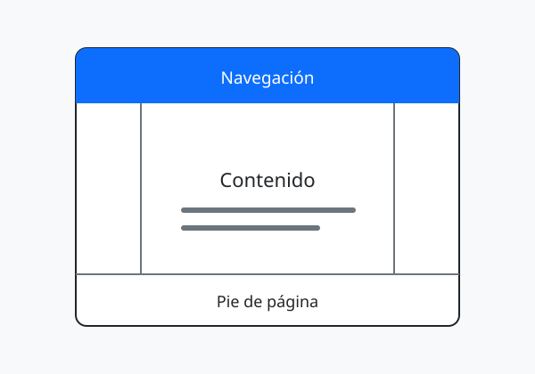

01 · HTMLPrimero la estructura,
Primero la estructura,
después el estilo.
Cada etiqueta tiene un propósito. Un sitio claro empieza por ordenar sus ideas antes de elegir sus colores.
Leer la notaUn espacio para aprender y crear
Una bitácora sobre lo que hay detrás de una buena página web: estructura, diseño y pequeños detalles que hacen la diferencia.
Explorar la bitácoraCesar Joseph Luna Chiu
Autor de Bitácora web
La bitácora

Cada etiqueta tiene un propósito. Un sitio claro empieza por ordenar sus ideas antes de elegir sus colores.
Leer la notaMárgenes, tipografía y contraste para una lectura más cómoda en cualquier pantalla.
Leer la nota ↗Columnas y componentes que mantienen una experiencia coherente entre páginas.
Leer la nota ↗01 / Estructura
HTML organiza lo que cuenta una página. El título principal presenta la idea; los párrafos la desarrollan y las imágenes aportan contexto. Las etiquetas <nav>, <main> y <footer> ayudan a reconocer las partes del sitio.
Escribe primero el contenido sin estilos. Ordena sus títulos y comprueba que los enlaces expliquen a dónde llevan. Esa estructura será la base del diseño.
02 / Presentación
CSS permite definir el ritmo de lectura. Un ancho de línea cómodo, suficiente separación entre párrafos y una jerarquía clara ayudan a encontrar la información sin esfuerzo.
Una hoja de estilos compartida mantiene los mismos colores y reglas en todo el blog. En pantallas pequeñas, las columnas se apilan para que cada texto conserve su espacio.
03 / Componentes
Bootstrap aporta la cuadrícula, la barra de navegación, las tarjetas y los controles del formulario. La hoja de estilos del proyecto les da una identidad común sin duplicar el diseño en cada página.
El menú indica dónde estás y permanece visible al desplazarte. En Contacto puedes probar una alerta dinámica y cerrarla con su botón.
Probar el formulario →